地政学
メンフィスはミシシッピ川の高台にあり、テネシー、アーカンソー、ミシシッピを結ぶ内陸南部の結節点です。河川、鉄道、高速道路、空港が集まり、綿花市場から現代物流まで、内陸を世界市場へ接続してきました。

🇺🇸 アメリカ合衆国 / 北米 / World City Atlas
ミシシッピ川の高台に広がる南部の物流都市です。ブルース、ソウル、エルヴィス、公民権の記憶、黒人史、バーベキュー、バスケットボール、洪水と住宅格差が同じ都市空間に重なります。
都市の骨格
メンフィスはミシシッピ川の渡河点、綿花市場、鉄道、空港物流、黒人音楽、公民権運動の記憶が重なる都市です。中心部の観光だけでなく、倉庫、教会、住宅地、洪水原を読むことで南部の現在が見えてきます。
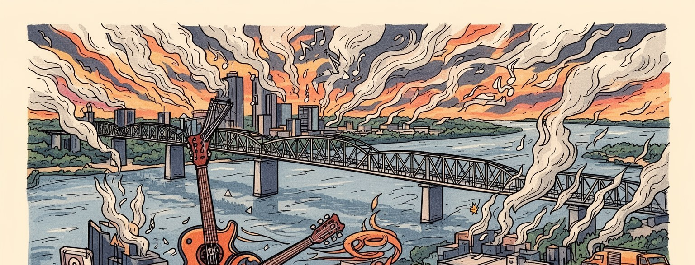
メンフィスはミシシッピ川の高台にあり、テネシー、アーカンソー、ミシシッピを結ぶ内陸南部の結節点です。河川、鉄道、高速道路、空港が集まり、綿花市場から現代物流まで、内陸を世界市場へ接続してきました。
空港貨物、倉庫、医療、食品加工、観光、音楽産業が雇用を作ります。夜勤の仕分け、トラック輸送、病院、厨房、清掃、配送、介護が都市を支え、物流の効率と低賃金労働の緊張も日常に残っています。地域も支えます。
ブルース、ソウル、ゴスペル、黒人教会、サン・スタジオ、スタックス、エルヴィスの記憶が街の響きを作ります。音楽は観光資源である前に、人種隔離、労働、信仰、移住、喪と誇りを語る共同体の声です。街も響きます。
来訪者はビール街、グレイスランド、川辺、公民権博物館、バーベキュー、グリズリーズの試合を巡ります。一方で住民には家賃、空き家、移動手段、学校、洪水、犯罪、医療への距離が日々の条件になります。重いです。
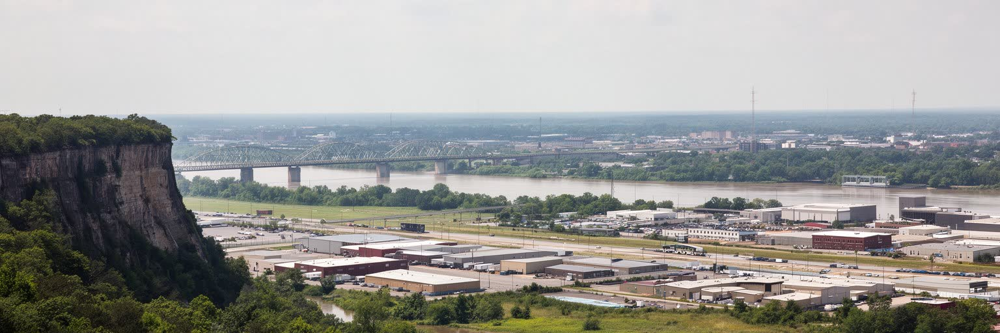
メンフィスはミシシッピ川の東岸、高い崖状の地形に生まれた都市です。川沿いの低地が氾濫を受けやすい一方、中心部は比較的安全な高台にあり、ここに渡河点、倉庫、鉄道、商業地区が集まりました。対岸のアーカンソーの平野、南のミシシッピ州、東のテネシー内陸を結ぶ位置は、南部の綿花経済、奴隷制後の農業、鉄道貨物、自動車交通を都市へ引き寄せました。川は美しい風景であると同時に、穀物、肥料、鋼材、燃料、建材を動かす実務の通路です。ダウンタウンのリバーフロントから橋を見ると、観光の散歩道、貨物列車、トラック、低地の洪水原が近い距離で並びます。水辺を眺めるだけでは、地形が所得、住宅、工業用地、避難路をどう分けてきたかは見えません。メンフィスを読むには、川がもたらす接続力と、洪水を避けるために高い土地へ寄り添った都市の慎重さを同時に見る必要があります。川岸の公園化や再開発が進むほど、公共空間の魅力と水害への備えは切り離せなくなります。川は都市の背骨であり、境界でもあり、南部内陸を外へ開く長い歴史の通路でもあります。さらに川は州境の感覚を日常化し、通勤、買い物、物流、ニュース圏を三州にまたがらせます。橋や堤防の維持は地味ですが、都市圏の経済と安全を支える公共的な仕事です。川を基準に見ると、都市の発展と不安が同じ線上に並びます。水辺の公園には家族連れやランナーも集まり、川は物流だけでなく余暇の場所にもなっています。
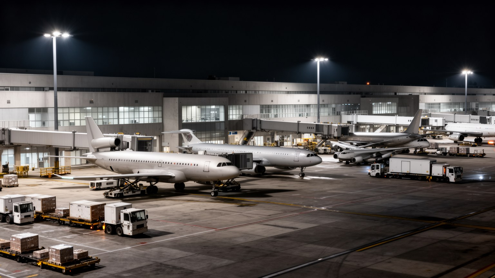
メンフィスの現代的な力は、空港貨物と倉庫物流に最もはっきり現れます。フェデックスの世界的なハブを抱える空港では、夜のうちに荷物が集まり、仕分けられ、再び各地へ飛び立ちます。高速道路、鉄道、川のバージ輸送が近くにあり、都市はアメリカ内陸の配送網を束ねる装置になりました。物流は効率、速度、在庫管理の世界として説明されますが、現場では夜勤、重量物、温度差、騒音、交通、低賃金、繁忙期の長時間労働が生活に影響します。倉庫や配送センターは中心部の観光地から離れた場所に広がり、車を持たない人には通勤が難しい職場も多いです。医療品、食品、電子商取引の商品が素早く届く便利さは、メンフィスの労働者の身体と都市の土地利用に支えられています。物流拠点が増えるほど、トラック交通、大気汚染、道路維持、住宅地との境界も問題になります。メンフィスを音楽都市としてだけ見ると、この夜に動く経済を見落とします。配送の速さは都市の誇りであると同時に、誰がその速度を担い、どの地区が負担を引き受けるのかを問う社会問題でもあります。空港の明かりは観光の光とは違い、世界市場と倉庫労働を結ぶ都市のもう一つの顔です。雇用の入口になりやすい産業だからこそ、賃金、技能訓練、公共交通、保育、健康管理をどう組み合わせるかが都市政策になります。速度の利益を地域へ戻す設計が欠かせません。
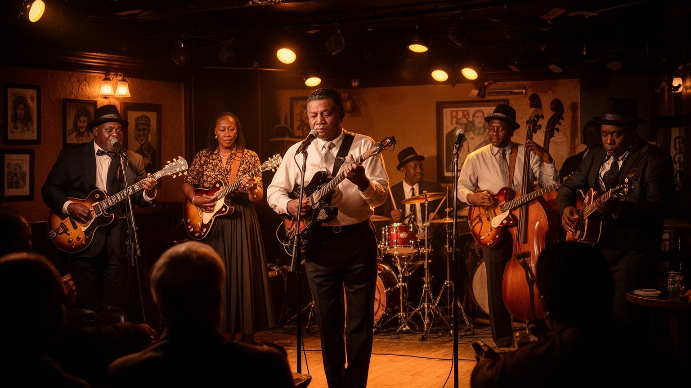
メンフィスの音楽は、ミシシッピ・デルタから北上した黒人労働者、教会、酒場、ラジオ、録音スタジオ、綿花市場のざわめきから育ちました。ビール街のブルースは、楽しさだけでなく、農村の貧困、人種差別、移動、恋愛、喪失、労働の痛みを都市の言葉へ変えた音です。サン・スタジオはブルース、カントリー、ゴスペル、ロックンロールが混ざる場となり、スタックスは黒人と白人の演奏者が緊張を抱えながらもソウルの厚い響きを作ります。音楽は都市ブランドになりましたが、演奏者にとっては家賃、ギャラ、著作権、夜の安全、練習場所、世代継承の負担でもあります。観光客が短い滞在で聴く一曲の背後には、教会の礼拝、学校のバンド、家族のレコード、地域クラブ、地元ラジオ、差別への抵抗があります。メンフィスの音を読むには、名盤や有名人の物語だけでなく、誰が演奏を学び、誰が会場を運営し、どの地区が文化の土台を失っているのかを見る必要があります。ブルースとソウルは過去の記念品ではなく、都市が自分の傷と誇りを現在形で語る方法です。街の音は、労働と信仰と移動の記憶を運んでいます。学校教育、小さな教会、家族経営のクラブが残るかどうかは、観光の宣伝よりも文化の未来を左右します。音楽を守るとは、演奏できる夜と住める昼を同時に守ることでもあります。耳に残る音は、地区の暮らしから離れません。
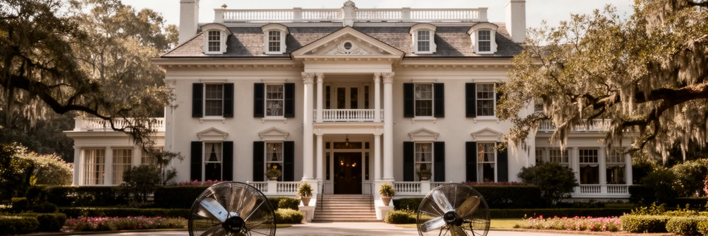
メンフィスを訪れる多くの人にとって、グレイスランドは都市の大きな入口です。エルヴィス・プレスリーの記憶は、ロックンロール、テレビ、映画、消費文化、南部白人の上昇物語、ファン巡礼を結びつけ、メンフィスに世界的な観光動線を生みました。ただし、その物語は黒人音楽との関係を抜きに語れません。ブルース、ゴスペル、リズム・アンド・ブルースがすでに息づいていた都市で、白人歌手がそれを大衆市場へ届けたことは、創造的な混合であると同時に、人種と商業をめぐる複雑な歴史でもあります。グレイスランドは華やかな邸宅であり、ファンの記憶の場であり、観光産業の雇用の場でもあります。来訪者は衣装や車、録音の物語を楽しみますが、その周辺にはホテル、交通、土産物、警備、清掃、地域経済が広がります。エルヴィスを単なる英雄として扱うだけでは、メンフィスの音楽的な土壌は見えにくいです。彼の記憶を読むことは、黒人文化、白人南部、メディア産業、スターの商品化、ファンの喪の儀礼がどのように一つの都市に集まったかを読むことでもあります。グレイスランドの人気は、メンフィスが大衆文化の世界地図に残る理由を示しています。同時に、スターの物語が大きいほど、周辺の黒人演奏者や地域の会場が見えにくくなる危険もあります。記憶の観光は、光の当たる人物と土台を作った都市の両方を扱う必要があります。
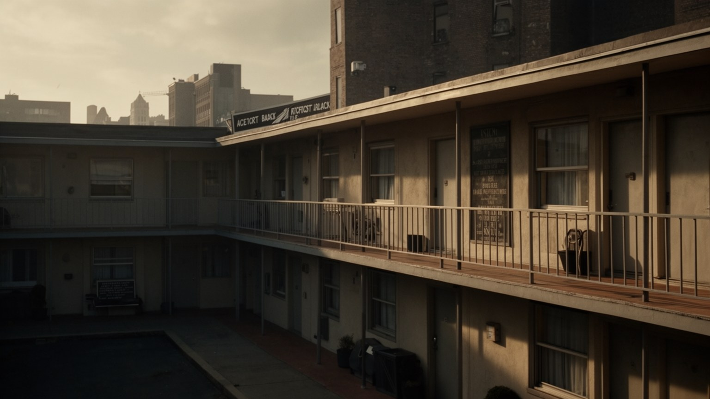
メンフィスの公民権の記憶は、ロレイン・モーテルと一九六八年の清掃労働者ストライキを中心に深く刻まれています。マーティン・ルーサー・キング・ジュニアが支援に訪れ、暗殺された場所は、現在の国立公民権博物館として都市の倫理を問い続けます。ストライキの核心は賃金だけではなく、黒人労働者が危険な仕事を担いながら人間として扱われないことへの抗議でした。メンフィスの黒人史は、奴隷制、綿花市場、隔離、教会、学校、音楽、労働組合、投票権、住宅差別を通じて都市の基盤を作ってきました。観光客が博物館を訪れるとき、展示を見るだけでなく、ごみ収集、清掃、医療、配送、飲食など現在の都市を支える仕事と結びつけて考える必要があります。公民権運動は過去の勝利ではなく、誰が安全に働き、誰が街に住み、誰の声が政策に届くのかという現在の問いです。メンフィスでは黒人文化が都市の魅力を作る一方、格差や暴力の負担も黒人地区に重くのしかかってきました。記憶を尊重するとは、記念施設を訪れるだけでなく、労働の尊厳を都市の中心課題として読み直すことでもあります。ロレイン・モーテルのバルコニーは、南部の歴史がいまも終わっていないことを静かに示しています。教会、学校、組合、家族の語りは、公式展示とは別の記憶を保ちます。そこに耳を澄ますと、公民権は観光の題材ではなく、都市の生活を測る基準になります。
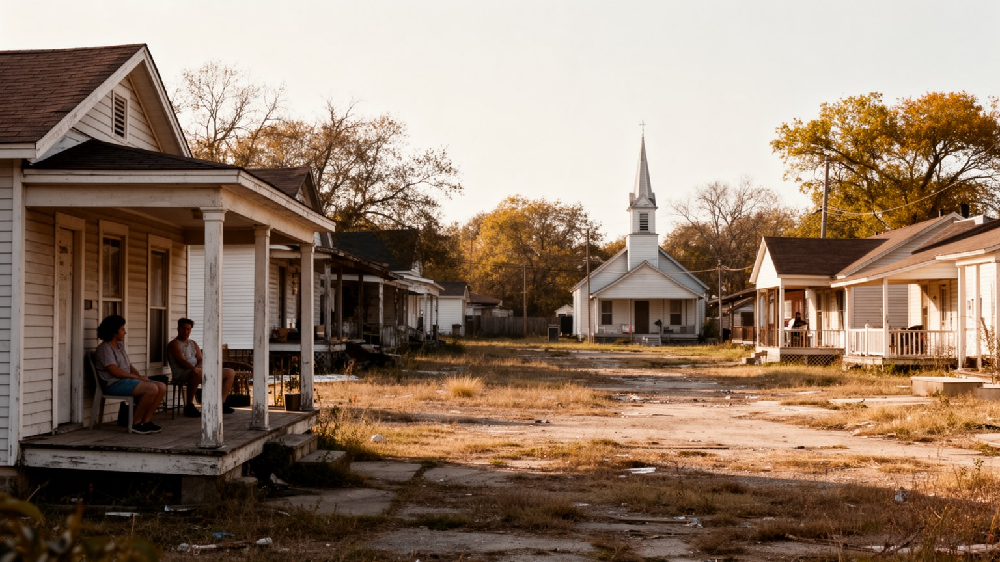
メンフィスの住宅格差は、南部都市の人種分離、郊外化、空き家、低所得、交通の弱さが重なって生まれています。中心部や大学周辺、水辺では再開発と観光投資が進む一方、北メンフィスや南メンフィスの一部では老朽住宅、空き地、商店の不足、学校への不安が暮らしを難しくします。家が安いことは必ずしも住みやすさを意味しません。修繕費、断熱、冷暖房、洪水保険、車への依存、近くの食料品店や病院の有無が生活の質を決めます。黒人住民が長く築いた教会、理髪店、食堂、学校、家族のつながりは、地価の上昇や人口流出で弱まることがあります。住宅政策は建物の数だけでなく、近隣の安全、歩道、バス、職場への距離、子どもの居場所と一体で考えなければなりません。観光地区の明るさと、空き家が並ぶ通りは同じ都市にあります。メンフィスの魅力を守るには、音楽や川辺の再生だけでなく、普通の家に住み続けられる条件を整える必要があります。住まいを失うことは住所を失うだけでなく、教会、親族、学校、音楽、食卓の記憶から切り離されることでもあります。住宅格差は都市文化の持続性そのものに関わる重い負担です。空き地を緑地や住宅へ戻す試み、家屋修繕の支援、交通改善は、犯罪対策や教育支援ともつながります。近隣を直すことは、都市の記憶を直すことでもあります。住まいの安定は文化を続ける条件です。
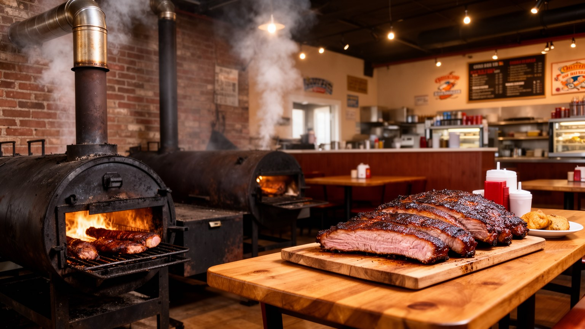
メンフィスの食文化を語るとき、バーベキューは欠かせません。豚肉を低温で長く燻し、ドライラブやソースで仕上げる味は、南部の農村、黒人料理、家族経営の店、競技会、観光の宣伝を結びつけてきました。リブやプルドポークは名物として知られますが、食堂の厨房では早朝の仕込み、薪や炭の管理、肉の仕入れ、皿洗い、配達、接客が重なります。食は祭りの楽しさであると同時に、低賃金の飲食労働や家族店の継承も抱えます。ソウルフード、フライドチキン、豆、青菜、コーンブレッド、パイ、デルタから来た味は、教会の集まりや近所の昼食に根づいています。観光客が有名店を巡る一方、住民の日常の食卓は価格、車での移動、食品店の少なさ、健康にも左右されます。メンフィスの皿には、南部黒人文化、労働者の腹、家族の誇り、観光経済が同時に盛られています。名物料理を味わうことは、煙の香りだけでなく、その味を守る職人、店員、地域の常連、食材を運ぶ物流を読むことでもあります。ファーマーズマーケットや学校給食、教会の食事会まで見ると、食は観光の名物を超えて生活の安全に関わります。店の味は家族史でもあり、地域の資本でもあります。人気が高まるほど、価格、家賃、人手不足は小さな店を圧迫するため、食を守るには飲食労働の条件も見なければなりません。煙は街の記憶を運び、味は地域を結びます。
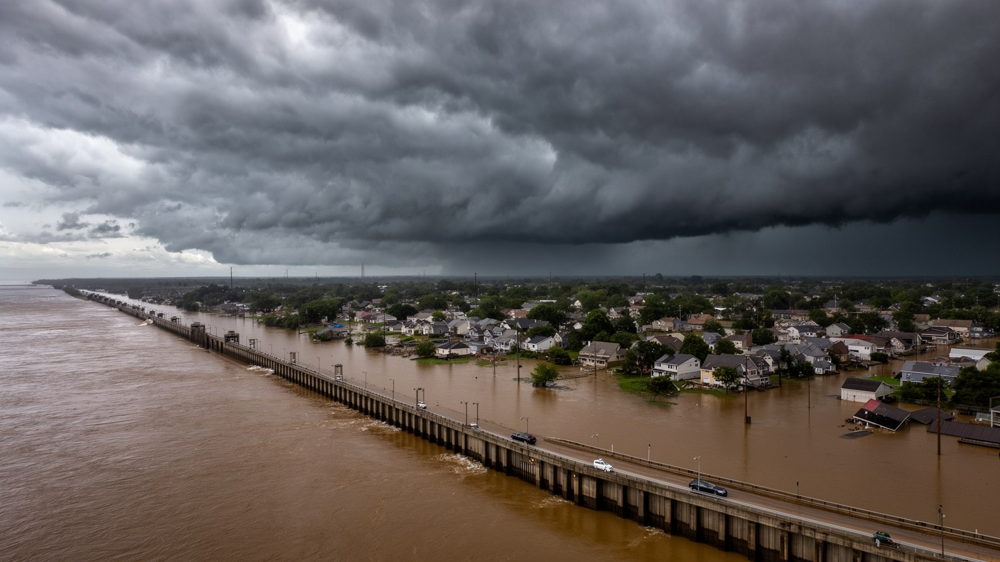
メンフィスは高台に中心部を置くことで洪水を避けてきましたが、都市圏全体が水害から自由なわけではありません。ミシシッピ川の増水、支流の氾濫、局地的な豪雨、排水不良は、低地の住宅、道路、倉庫、農地、郊外の開発地に影響します。気候変動で強い雨や暑熱が増えれば、古い住宅、屋外労働者、高齢者、車を持たない住民ほど負担を受けやすいです。川沿いの公園や観光施設は都市の魅力を高めますが、同じ水辺には避難路、保険、堤防、排水、停電時の対応が必要です。物流都市であるメンフィスにとって、洪水は住宅だけでなく、倉庫、空港への道路、鉄道、橋、配送時間にも影響する経済リスクです。水害への備えは土木工事だけではなく、危険地への住宅供給、低所得世帯の保険、災害後の修理資金、公共交通で避難できるかという社会政策でもあります。大河に近い都市は、水を景観として消費するだけでは持続しません。メンフィスの気候リスクを読むことは、地形、貧困、インフラ、労働を一つの都市条件として見ることです。川の豊かさと危険は同じ場所にあり、その両方を覚えていることが、次の災害で人を置き去りにしないための前提になります。暑さへの備えも重要で、日陰、冷房、停電時の避難所、水分補給、屋外作業の時間管理が命を守ります。防災は河岸だけでなく、各近隣の暮らしに及ぶ条件です。備えは日常の制度です。
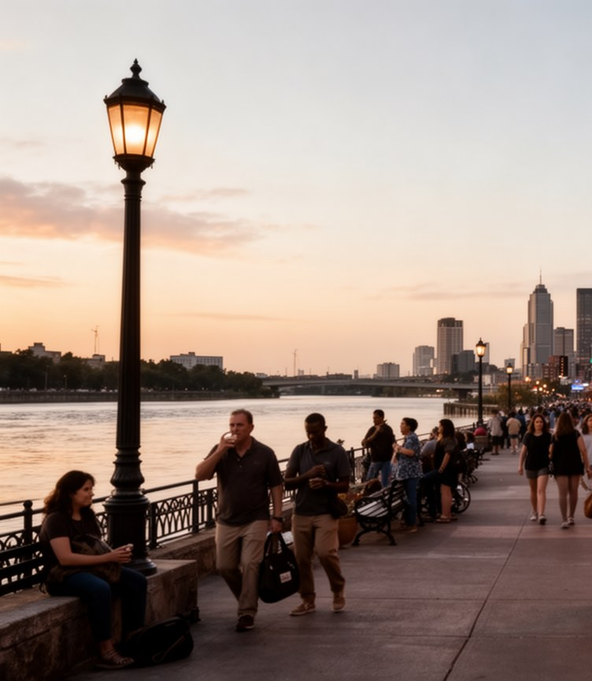
メンフィス観光は、ビール街の音楽、グレイスランド、公民権博物館、サン・スタジオ、スタックス、川辺、バーベキューを結ぶ記憶の回廊として成り立ちます。来訪者は短い距離で、黒人音楽の誕生、大衆文化のスター化、公民権の悲劇、南部の食、川の風景に触れることができます。しかし、その回廊をただ楽しい名所の連続として歩くと、都市の重さは薄まります。ビール街の明るさは、黒人商業地区の歴史と観光向けの演出を同時に持ち、博物館の静けさは労働者の命と尊厳を問います。観光が雇用と税収を生む一方、中心部の再開発は家賃、警備、交通、短期滞在、地域店の生き残りにも影響します。メンフィスの観光は、音楽を聴き、肉を食べ、写真を撮るだけで完結しません。楽しい場所ほど、誰の記憶がそこで売られ、誰の生活がその演出を支え、どの歴史が見えにくくされているのかを考える必要があります。観光の価値は、都市の傷を消すことではなく、来訪者がその傷を含めて街を理解する入口を作ることにあります。メンフィスの名所を結ぶ道は、南部の喜びと不平等を同時に読むための道でもあります。移動手段が限られる観光客には、名所同士の距離や治安の印象も都市経験を左右します。案内、交通、歩道、照明を整えることは、記憶を学ぶ入口を広げる仕事でもあります。観光は都市への招待であり、歴史への責任でもあります。
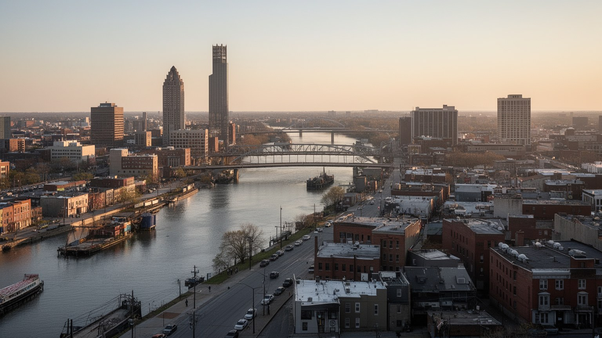
メンフィスを一つの都市として読むと、ミシシッピ川、物流、ブルースとソウル、エルヴィス、公民権、黒人史、住宅格差、食文化、スポーツ、洪水が別々の話ではないことが分かります。川は綿花と貨物を運び、鉄道と空港は都市を世界市場へつなぎ、音楽は移住と労働と信仰の記憶を響かせました。観光はその記憶を訪れやすい形に整えますが、同じ都市には空き家、低賃金労働、移動の不便、学校や医療への不安も残ります。メンフィスの重要性は、経済規模だけでは測れません。南部黒人文化がアメリカ音楽を変え、公民権運動が労働の尊厳を問い、現代物流が日々の消費を支える場所だからです。都市の魅力を長く保つには、音楽や名所を保存するだけでなく、演奏者、倉庫労働者、清掃員、料理人、学生、家族が住み続けられる条件を整えなければなりません。メンフィスは華やかな大都市ではありませんが、アメリカ南部の歴史と現在が濃く集まる結節点です。川辺の景色、クラブの音、博物館の沈黙、煙の匂い、グリズリーズや大学チームを応援する歓声を一続きに見ると、この都市は記憶を抱えながら実務で動き続ける場所として立ち上がります。強さと脆さを分けずに見ると、メンフィスは南部の地方都市ではなく、物流時代と公民権の未完の難題を同時に示す世界的な都市教材になります。その視点が街の奥行きを開きます。小さな場面にも南部の現在が宿ります。